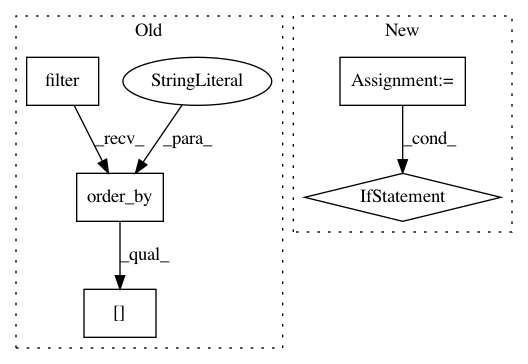

8f8c88ca472f10b643f539bbc12edc4cf998bdae,apps/rss_feeds/tasks.py,TaskFeeds,run,#TaskFeeds#,14
Before Change
// Mistakenly inactive feeds
day = now - datetime.timedelta(days=1)
inactive_feeds = Feed.objects.filter(
next_scheduled_update__lte=day,
min_to_decay__lte=60*24,
active_subscribers__gte=1
).order_by("?")[:100]
inactive_count = inactive_feeds.count()
cp3 = time.time()
old = now - datetime.timedelta(days=3)
After Change
now = datetime.datetime.utcnow()
start = time.time()
r = redis.Redis(connection_pool=settings.REDIS_FEED_POOL)
task_feeds_size = r.llen("update_feeds") * 12
hour_ago = now - datetime.timedelta(hours=1)
r.zremrangebyscore("fetched_feeds_last_hour", 0, int(hour_ago.strftime("%s")))
now_timestamp = int(now.strftime("%s"))
queued_feeds = r.zrangebyscore("scheduled_updates", 0, now_timestamp)
r.zremrangebyscore("scheduled_updates", 0, now_timestamp)
r.sadd("queued_feeds", *queued_feeds)
logging.debug(" ---> ~SN~FBQueuing ~SB%s~SN stale feeds (~SB%s~SN/%s queued/scheduled)" % (
len(queued_feeds),
r.scard("queued_feeds"),
r.zcard("scheduled_updates")))
// Regular feeds
if task_feeds_size < 1000:
feeds = r.srandmember("queued_feeds", 1000)
Feed.task_feeds(feeds, verbose=True)
active_count = len(feeds)
else:
active_count = 0
cp1 = time.time()
// Force refresh feeds
refresh_feeds = Feed.objects.filter(
In pattern: SUPERPATTERN
Frequency: 3
Non-data size: 5
Instances
Project Name: samuelclay/NewsBlur
Commit Name: 8f8c88ca472f10b643f539bbc12edc4cf998bdae
Time: 2013-04-03
Author: samuel@ofbrooklyn.com
File Name: apps/rss_feeds/tasks.py
Class Name: TaskFeeds
Method Name: run
Project Name: AlexsLemonade/refinebio
Commit Name: 8bc46bda10949ec121c784fa0dd70deea12438f9
Time: 2019-08-22
Author: arielsvn@gmail.com
File Name: foreman/data_refinery_foreman/foreman/management/commands/rerun_salmon_old_samples.py
Class Name:
Method Name: update_salmon_versions
Project Name: AlexsLemonade/refinebio
Commit Name: 3535d18e63a7b90b92dd11dcad06e9a74bb7cce5
Time: 2020-01-08
Author: arielsvn@gmail.com
File Name: common/data_refinery_common/rna_seq.py
Class Name:
Method Name: get_quant_files_for_results